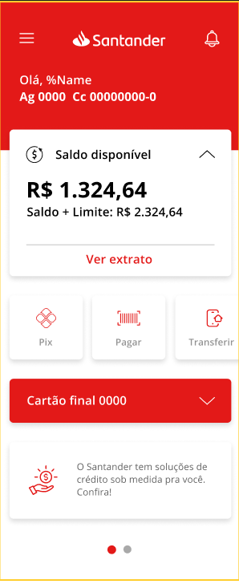
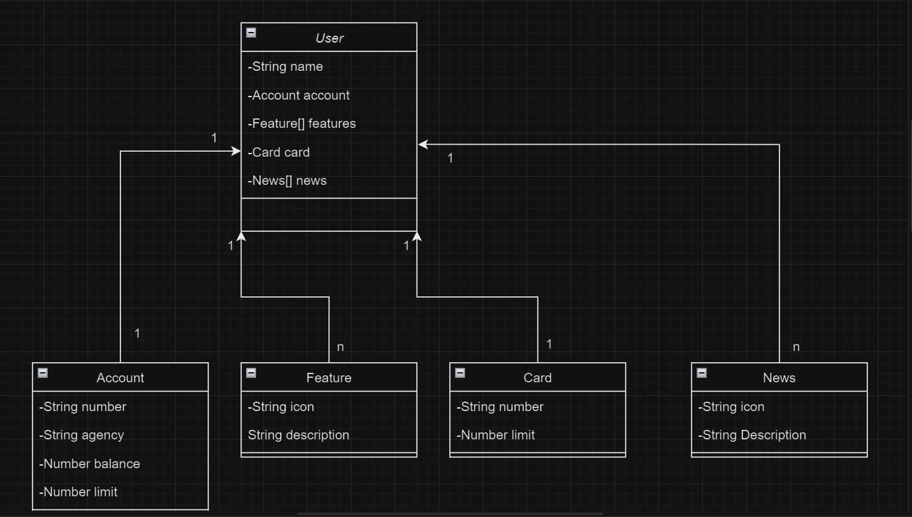

Publicando uma API RESTful na Nuvem com Spring Boot 3 e Railway
Este projeto foi realizado durante o Bootcamp Santander Java Developer - 2023, com a intenção de publicar uma API RESTful na Nuvem usando Spring Boot 3, Java 17 e Railway.
A ideia deste projeto é simular uma API, para criação de contas bancárias, com Usuario, Conta, Cartão, recursos e novidades.
Utilizamos o Figma para abastração do dominio desta API, sendo útil na análise e solução do projeto.

Diagrama de Classes (Dominío da API):

Principais Tecnologias:
Java 17: Utilizaremos a versão LTS mais recente do Java para tirar vantagem das últimas inovações que essa linguagem robusta e amplamente utilizada oferece;
Spring Boot 3: Trabalharemos com a mais nova versão do Spring Boot, que maximiza a produtividade do desenvolvedor por meio de sua poderosa premissa de autoconfiguração;
Spring Data JPA: Exploraremos como essa ferramenta pode simplificar nossa camada de acesso aos dados, facilitando a integração com bancos de dados SQL;
OpenAPI (Swagger): Vamos criar uma documentação de API eficaz e fácil de entender usando a OpenAPI (Swagger), perfeitamente alinhada com a alta produtividade que o Spring Boot oferece;
Railway: facilita o deploy e monitoramento de nossas soluções na nuvem, além de oferecer diversos bancos de dados como serviço e pipelines de CI/CD.
Neste projeto utilizamos a linguagem Java com Spring Framework, H2 Database para conferir se os dados estão sendo persistidos e Postman para chamar as requisições.
Link para o Github:
← Voltar ao portfolio